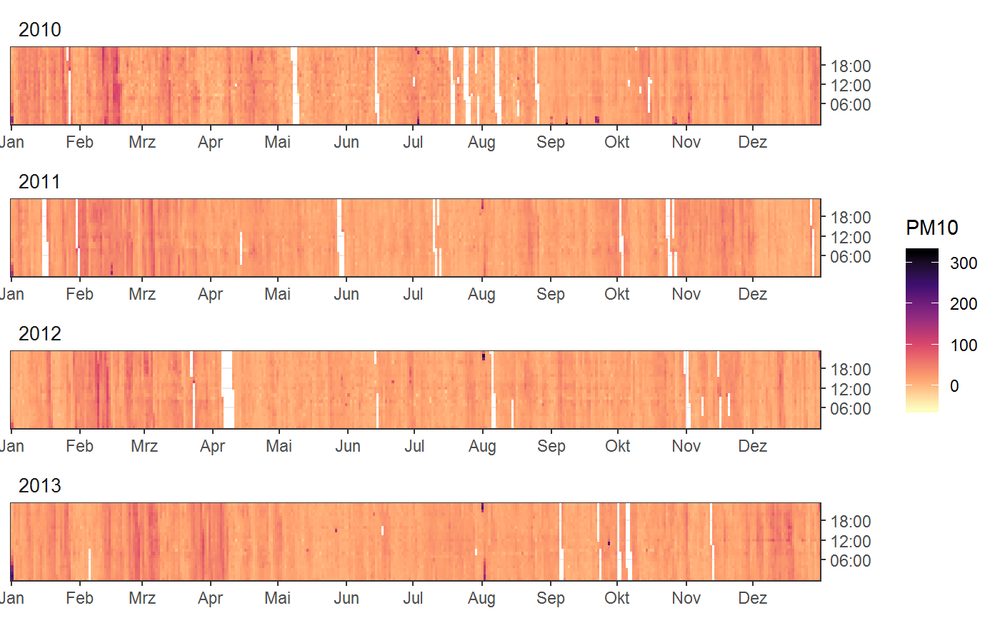
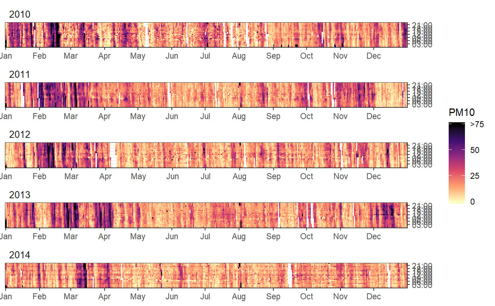
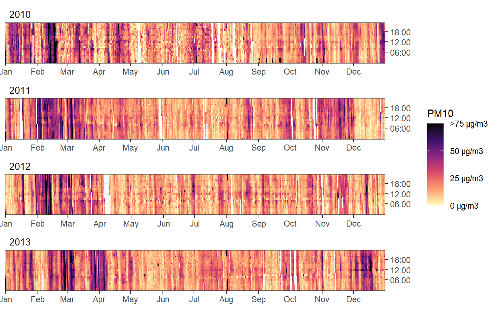
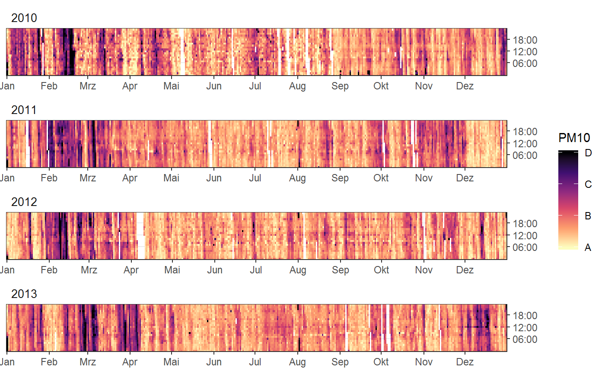
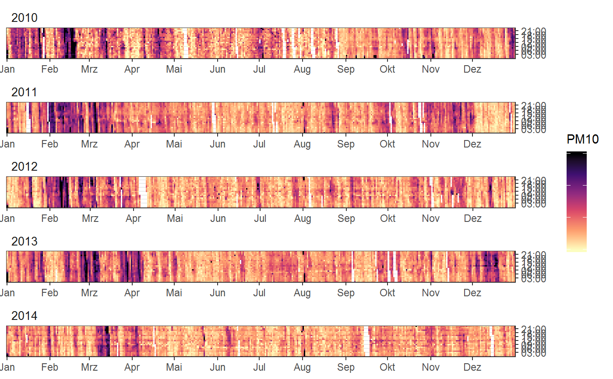
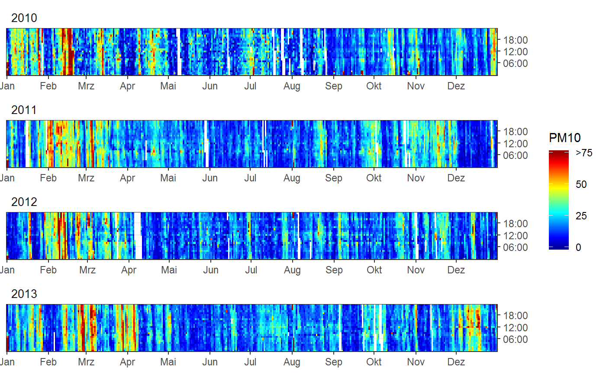

The scale only applies the limits to the determination of the color. The underlying data isn't squish. All values outside the limit are simple colored the same.
for the scale
A numeric vector of positions for breaks
One of:
NULL for no labels
waiver() for the default labels computed by the
transformation object. Adds leading ">" for last element
A character vector giving labels (must be same length as breaks)
A function that takes the breaks as input and returns labels as output. Adds leading ">" for last element
Other arguments passed on to ggplot2::scale_colour_viridis_c() or scale_fill_viridis_c()
scale
library(ggplot2)
fn <- rOstluft.data::f("Zch_Stampfenbachstrasse_2010-2014.csv")
df <-
rOstluft::read_airmo_csv(fn) %>%
dplyr::filter(starttime < lubridate::ymd(20140101)) %>%
rOstluft::rolf_to_openair()
# data with outliers / extreme values
ggyearday(df, time = "date", z = "PM10")
#> Warning: Removed 2227 rows containing missing values (geom_raster).

# simple squished scale
fill_scale <- scale_fill_viridis_squished(
limits = c(0, 75),
breaks = c(0, 25, 50, 75),
direction = -1,
na.value = NA,
option = "A"
)
ggyearday(df, time = "date", z = "PM10", fill_scale = fill_scale) +
facet_wrap(vars(year), scales = "free_x", ncol = 1)
#> Warning: Removed 2227 rows containing missing values (geom_raster).

# add unit to scale (or any other label formating function)
fill_scale <- scale_fill_viridis_squished(
limits = c(0, 75),
breaks = c(0, 25, 50, 75),
labels = scales::unit_format(unit = "\u00b5g/m3"),
direction = -1,
na.value = NA,
option = "A"
)
ggyearday(df, time = "date", z = "PM10", fill_scale = fill_scale)
#> Warning: Removed 2227 rows containing missing values (geom_raster).

# custom labels for breaks
fill_scale <- scale_fill_viridis_squished(
limits = c(0, 75),
breaks = c(0, 25, 50, 75),
labels = c("A", "B", "C", "D"),
direction = -1,
na.value = NA,
option = "A"
)
ggyearday(df, time = "date", z = "PM10", fill_scale = fill_scale)
#> Warning: Removed 2227 rows containing missing values (geom_raster).

# No labels for breaks
fill_scale <- scale_fill_viridis_squished(
limits = c(0, 75),
breaks = c(0, 25, 50, 75),
labels = NULL,
direction = -1,
na.value = NA,
option = "A"
)
ggyearday(df, time = "date", z = "PM10", fill_scale = fill_scale)
#> Warning: Removed 2227 rows containing missing values (geom_raster).

# simple squished jet gradientn scale
fill_scale <- scale_fill_gradientn_squished(
limits = c(0, 75),
breaks = c(0, 25, 50, 75),
colors = matlab::jet.colors(20),
na.value = NA
)
ggyearday(df, time = "date", z = "PM10", fill_scale = fill_scale)
#> Warning: Removed 2227 rows containing missing values (geom_raster).
